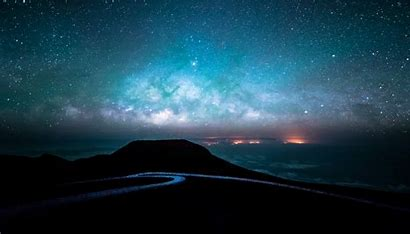

night
Night (also described as nighttime, unconventionally spelled as "nite") is the period of ambient darkness from sunset to sunrise during each 24-hour day, when the Sun is below the horizon
restaurent
A restaurant is a business that prepares and serves food and drinks to customers.[1] Meals are generally served and eaten on the premises, but many restaurants also offer take-out and food delivery services